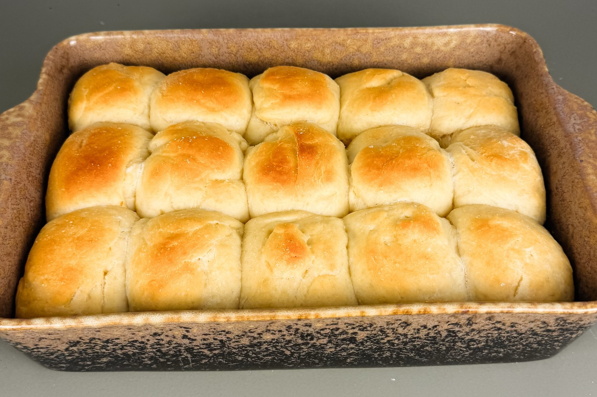

She’s the Goose

Thanksgiving · The Bread
Soft, buttery pull-apart rolls with a delicate honey butter finish.
For the brioche dough
For the honey butter finish
In the bowl of a stand mixer fitted with the dough hook, combine flour, instant yeast, sugar, and salt.
Add the warm milk, eggs, and honey. Mix on low until a shaggy dough forms.
Add the very soft butter gradually, letting each addition incorporate. Knead on low (about speed 2) for 8–12 minutes, until smooth, elastic, and slightly tacky.
Transfer dough to a lightly greased bowl, cover, and let rise in a warm place for 1–1½ hours, or until doubled.
Butter a 9 × 13-inch baking dish. Divide dough into 15 equal pieces (approximately 75 g each) and shape into smooth balls. Arrange in 3 rows of 5.
Cover and let rise 45–75 minutes, until noticeably puffy and nearly touching. Meanwhile, preheat oven to 350°F.
Bake uncovered for approximately 22–28 minutes, checking early, until golden brown and the center rolls register around 190–195°F. Tent loosely with foil if browning too quickly.
Stir together melted butter and honey. For immediate serving, brush the warm rolls lightly with honey butter; sprinkle with flaky salt if desired. Let rest 5–10 minutes.
Make-ahead serving note. If baking earlier in the day, let the rolls cool completely and cover. Before serving, rewarm loosely covered with foil at 300°F for 5–8 minutes. Brush with honey butter after warming so the tops stay fresh and glossy.
On the same table. Set them out with the apple cider roasted turkey and its shallot gravy.
Letters from She’s the Goose
A letter and a recipe from me, every Tuesday.
Thank you — look for a note to confirm.